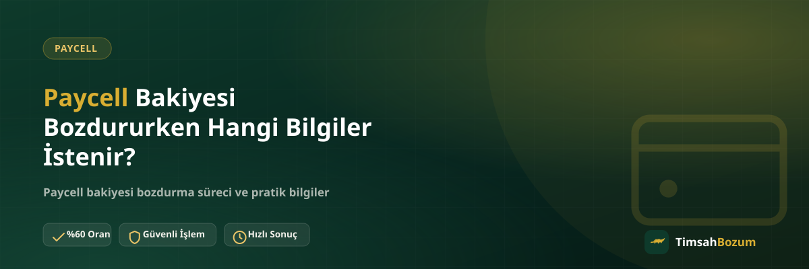

Paycell bakiyeni bozdurmak için WhatsApp'tan yazmadan önce "hangi bilgiyi hazırlamam gerekiyor" sorusu akla gelebilir. İyi haber, süreç karmaşık değil: istenen bilgi sayısı az ve hepsi elinde zaten var. Bu yazıda tam olarak hangi bilgilerin istendiğini, hangi bilgilerin asla istenmediğini ve ilk mesajını nasıl hazırlaman gerektiğini anlatıyoruz.
Paycell Bozum Talebi İçin Hangi Bilgi Gerekir?
Paycell bakiye tabanlı bir hizmet olduğu için işlem, kod tabanlı hizmetlerden farklı işler. İstenen temel bilgi iki şeyden ibaret: uygulamandaki güncel bakiyeni gösteren bir ekran görüntüsü ve bozdurmak istediğin tutar. Bunların dışında ek bir belge veya kayıt istenmiyor.
Ekran Görüntüsü Neden Bu Kadar Önemli?
Ekran görüntüsü, bakiyenin güncel ve doğru olduğunu gösteren en pratik kanıt. Tutarı sadece yazıyla belirtmek yerine uygulamadan alınan net bir görsel paylaşmak, karşı taraftaki hattın bilgiyi tekrar sorma ihtiyacını ortadan kaldırır ve süreci ilk mesajdan itibaren hızlandırır.
Bakiye Tutarını Nasıl Doğru Paylaşırım?
Ekran görüntüsünde tutarın net ve okunaklı görünmesi yeterli. Görselin eski bir tarihten alınmış olmaması, uygulamanın ana ekranında bakiyenin tam göründüğü bir kare olması işlemi kolaylaştırır. Bulanık veya kesilmiş bir görüntü, bilginin tekrar istenmesine yol açar.
Paylaşman Gerekmeyen Bilgiler Hangileri?
Bozum süreci, hesabına erişim gerektiren hiçbir bilgiyi talep etmez. Bu ayrımı bilmek, hem seni hem de süreci korur; çünkü gerçek bir bozum talebiyle hesap bilgisi isteyen bir dolandırıcılık girişimini birbirinden ayırmanı sağlar.
Şifre veya SMS Kodu İstenir mi?
Hayır. Paycell hesabının şifresi, uygulama girişi veya hattına gelen bir SMS doğrulama kodu asla istenmez. Böyle bir talep gelirse bunun resmi TimsahBozum süreciyle hiçbir ilgisi olmadığını bilmeli ve bilgi paylaşmadan işlemi durdurmalısın.
Kimlik Belgesi veya Üyelik Formu Gerekir mi?
Hayır, üyelik oluşturmak, form doldurmak ya da kimlik belgesi göndermek gerekmiyor. Paycell bozdurma sürecinin tamamı WhatsApp üzerinden, sadece bakiye bilginle ilerler.
Hesabıma Erişim Vermem Gerekir mi?
Hayır. Uygulamana giriş yapılması, hesabının bize bağlanması veya herhangi bir erişim izni verilmesi gerekmiyor. Senden istenen tek şey, bakiyeni gösteren bir görsel; hesabın kendisiyle ilgili hiçbir erişim talep edilmez. Bu ayrım özellikle önemli, çünkü hesap erişimi isteyen her türlü talep, bozum sürecinin dışında kalan bir durumdur ve dikkatle değerlendirilmelidir.
İlk Mesajını Nasıl Yazmalısın?
Süreci en çok hızlandıran şey, ilk mesajında ekran görüntüsünü ve bozdurmak istediğin tutarı birlikte paylaşman. Örneğin "Paycell bakiyem var, ekran görüntüsü ekte, 300 TL'sini bozdurmak istiyorum" şeklinde bir mesaj, karşılıklı birkaç mesajlık bilgi alışverişini baştan gereksiz kılar.
Oranı Ne Zaman Teyit Edersin?
Bilgini paylaştıktan sonra güncel oran sana WhatsApp üzerinden bildirilir. Oranı gördükten sonra işlemi onaylamakta veya vazgeçmekte serbestsin; oran sorusu bir taahhüt oluşturmaz, sadece bilgilendirme amacı taşır. Sitede yayınlanan oran genel bir referans olduğu için, işlem anındaki güncel orana güvenmek yerine her zaman WhatsApp'tan teyit alman en doğru yaklaşım.
Bilgi Paylaşırken Nelere Dikkat Etmelisin?
Bilgini yalnızca resmi WhatsApp hattımızdan (+90 543 887 21 71) paylaşman önemli. Başka bir numaradan veya platformdan "TimsahBozum" adına ulaşıldığını düşünüyorsan, bilgi paylaşmadan önce resmi hattan teyit istemen en güvenli yaklaşım.
Eksik veya Bulanık Bilgi Süreci Nasıl Geciktirir?
Eksik tutar bilgisi, okunmayan bir ekran görüntüsü veya tarihi belirsiz bir görsel, bilginin tekrar istenmesine ve işlemin birkaç mesaj daha sürmesine neden olur. Bu durumlar işlemi iptal etmez, sadece geciktirir; bu yüzden ilk mesajda bilgiyi net ve eksiksiz paylaşmak en pratik yol.
Birden Fazla Bakiye veya Kodu Aynı Anda Bildirebilir misin?
Hem Paycell bakiyen hem de örneğin bir Razer Gold kodun varsa, ikisini de aynı mesajda belirtmen süreci kolaylaştırır. Her birini ayrı ayrı mesajlarla ve aralıklarla göndermek yerine hepsini tek seferde paylaşmak, karşı taraftaki hattın bilgileri tek tek toplamasını engeller ve işlemi hızlandırır.
Farklı Hizmetler İçin Aynı Bilgiler mi İstenir?
Hayır, hizmete göre istenen bilgi değişir. Paycell gibi bakiye tabanlı hizmetlerde güncel bakiyeni gösteren ekran görüntüsü yeterliyken, Razer Gold veya iTunes gibi kod tabanlı hizmetlerde kodun kendisi istenir. Birden fazla hizmeti aynı anda bildirecek olursan, hangi bilginin hangi hizmete ait olduğunu mesajında açıkça belirtmen karışıklığı önler.
Bilgini Gönderdikten Sonra Sıradaki Adım Nedir?
Ekran görüntün ve tutar bilgin ulaştıktan sonra güncel oran sana iletilir. Oranı onayladığında işlem devam eder, onaylamazsan bilgin kullanılmadan konuşma orada kapanır. Bu adımda yapman gereken tek şey, oranı gördükten sonra net bir cevap vermen; "bekliyorum" ya da "düşüneyim" gibi yarım cevaplar süreci sürüncemede bırakabilir.
Aynı Mesajı Tekrar Göndermek Süreci Hızlandırır mı?
Hayır, aksine karışıklığa yol açabilir. Mesajın iletildiğinden eminsen aynı bilgiyi art arda birkaç kez göndermek yerine yanıtı beklemek daha pratiktir; sıralamayı değiştirmez, sadece konuşma geçmişini karmaşıklaştırır.
Paycell Bozumunda Süreç Nasıl İlerler?
Bilgini paylaştıktan ve oranı teyit ettikten sonra, onayınla birlikte ödeme WhatsApp üzerinden görüşülen yöntemle yapılır. Çalışma saatlerimiz her gün 10:00 ile 03:00 arası; bu saatler dışında gönderdiğin mesaj kaybolmaz, hat açıldığında yanıtlanır.
Paycell bakiyeni bozdurmaya hazırsan, ekran görüntünle WhatsApp hattımıza yazarak süreci başlatabilirsin.
İlgili Yazılar
- Paycell Bakiyemi Nereden Görebilirim?
- Paycell Bozdurma İşlemi Kaç Adımda Tamamlanır?
- Bozum Yaparken Hangi Bilgileri Asla Paylaşmamalısın?